Sealed Class
Array ● Set ● List ● Map ● Deque ● Collectors
Instant ● Duration ● LocalDateTime ● ZonedDateTime ● DateFormat
File ● Zip File ● Properties ● Temporary File ● XML File ● SimpleFileVisitor
Lambda Expressions ● (Composed) Function ● Consumer ● Supplier ● MethodHandle
System Properties ● ProcessHandle ● ProcessBuilder ● ClassLoader ● FileStore
Flow ● Publisher ● Subscriber ● Processor ● HttpServer ● HttpClient
Collectors ● Function ● Consumer ● Supplier ● Comparator
Pattern ● Matcher ● Scanner ● Stream Filtering
Comparable ● Comparator ● Locale ● Collator
Collectors ● Join ● Count ● Partition ● Traverse ● Queue ● Deque ● Flatten
Skip ● Limit ● Drop ● Take ● Filter ● Match
Gatherers ● Fold ● Scan ● Fixed Window ● Sliding Window ●
Collectors ● ZonedDateTime
CyclicBarrier ● Phaser ● ExecutorService ● CompletableFuture
Runnable ● Callable ● FutureTask ● ExecutorService ● ForkJoinPool ● Virtual Threads
HttpClient ● HttpRequest ● HttpResponse ● CompletableFuture
HttpServer ● HttpExchange
Socket ● SSLSocket ● ServerSocket ● SSLServerSocket ● ExecutorService ● Phaser
Class File Disassembler 'javap' ● JVM ● GC ● Cryptographic Keys ● Trusted Certificates
Sealed Class
Array ● Set ● List ● Map ● Deque ● Collectors
Instant ● Duration ● LocalDateTime ● ZonedDateTime ● DateFormat
File ● Zip File ● Properties ● Temporary File ● XML File ● SimpleFileVisitor
Lambda Expressions ● (Composed) Function ● Consumer ● Supplier ● MethodHandle
System Properties ● ProcessHandle ● ProcessBuilder ● ClassLoader ● FileStore
Flow ● Publisher ● Subscriber ● Processor ● HttpServer ● HttpClient
Collectors ● Function ● Consumer ● Supplier ● Comparator
Pattern ● Matcher ● Scanner ● Stream Filtering
Comparable ● Comparator ● Locale ● Collator
Collectors ● Join ● Count ● Partition ● Traverse ● Queue ● Deque ● Flatten
Skip ● Limit ● Drop ● Take ● Filter ● Match
Gatherers ● Fold ● Scan ● Fixed Window ● Sliding Window ●
Collectors ● ZonedDateTime
CyclicBarrier ● Phaser ● ExecutorService ● CompletableFuture
Runnable ● Callable ● FutureTask ● ExecutorService ● ForkJoinPool ● Virtual Threads
HttpClient ● HttpRequest ● HttpResponse ● CompletableFuture
HttpServer ● HttpExchange
Socket ● SSLSocket ● ServerSocket ● SSLServerSocket ● ExecutorService ● Phaser
Class File Disassembler 'javap' ● JVM ● GC ● Cryptographic Keys ● Trusted CertificatesThere are no external dependencies in Maven pom.xml. In this project, only Java is used.
Java source code. Packages:

 kp.about.basics
kp.about.basics
kp.collections
kp.dates
kp.files
kp.methods
kp.processes
kp.reactive.streams
kp.records
kp.regex
kp.sorting
kp.streams.collecting
kp.streams.fragmentation
kp.streams.teeing
kp.synchronizers
kp.tasks
kp.web.httpclient
kp.web.httpserver
kp.web.sockets
Action:

 Launch batch file
'01 Build And Run Menu.bat'
and select the menu item 'Basics'.
Launch batch file
'01 Build And Run Menu.bat'
and select the menu item 'Basics'.
It starts the application kp.about.basics.ApplicationForBasics.
1.1. Interface
kp.about.basics.Var
Method kp.about.basics.Var::launch

 Console log from 'Var::launch' method.
Console log from 'Var::launch' method.
1.2. Class
kp.about.basics.inheritance.PatternMatching
Implementing sealed classes.
Method kp.about.basics.inheritance.PatternMatching::withoutAnyCast
Console log from 'PatternMatching::withoutAnyCast' method.
1.3. Class
kp.about.basics.StringInterning
Method kp.about.basics.StringInterning::showIdentityHashCodesForStrings
Console log from 'StringInterning::showIdentityHashCodesForStrings' method.
1.4. Class
kp.about.basics.Declarations
Method kp.about.basics.Declarations::declareLocalVariables
1.5. Class
kp.about.basics.StackMemoryVersusHeapSpace
Method kp.about.basics.StackMemoryVersusHeapSpace::referenceVariablesAndStackMemoryAndHeapSpace
Back to the top of the pageAction:
Launch batch file
'01 Build And Run Menu.bat'
and select the menu item 'Collections'.
It starts the application kp.collections.ApplicationForCollections.
2.1. Class
kp.collections.ApplicationForCollections
Method kp.collections.ApplicationForCollections::showArraysMismatch

Console log from 'ApplicationForCollections::showArraysMismatch' method.
Method kp.collections.ApplicationForCollections::countLetterFrequency
Console log from 'ApplicationForCollections::countLetterFrequency' method.
2.2. Class
kp.collections.Apportions
Method kp.collections.Apportions::apportionSetAndMerge
Console log from 'Apportions::apportionSetAndMerge' method.
Method kp.collections.Apportions::apportionMapAndMerge
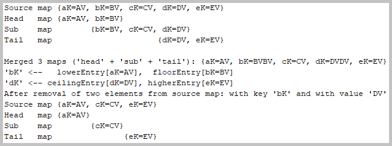
Console log from 'Apportions::apportionMapAndMerge' method.
2.3. Class
kp.collections.preferable.Preferable
Method kp.collections.preferable.Preferable::preferArrayDeque
Console log from 'Preferable::preferArrayDeque' method.
Method kp.collections.preferable.Preferable::preferLinkedHashMapAndLinkedHashSet
Console log from 'Preferable::preferLinkedHashMapAndLinkedHashSet' method.
Method kp.collections.preferable.Preferable::preferCopyOnWriteArrayList
Console log from 'Preferable::preferCopyOnWriteArrayList' method.
Method kp.collections.preferable.Preferable::preferConcurrentHashMap
Console log from 'Preferable::preferConcurrentHashMap' method.
Method kp.collections.preferable.Preferable::preferConcurrentSkipListMapAndConcurrentSkipListSet
Console log from 'Preferable::preferConcurrentSkipListMapAndConcurrentSkipListSet' method.
2.4. Class
kp.collections.InstanceChecking
Method kp.collections.InstanceChecking::checkInstanceAndFindElement
Console log from 'InstanceChecking::checkInstanceAndFindElement' method.
2.5. Class
kp.collections.Multidimensionals
Method kp.collections.Multidimensionals::multidimensionalArrayToMultidimensionalList
Console log from 'Multidimensionals::multidimensionalArrayToMultidimensionalList' method.
2.6. Class
kp.collections.Sequenced
The interfaces and subinterfaces hierarchy
Method kp.collections.Sequenced::process
Console log from 'Sequenced::process' method.
2.7. Class
kp.collections.ApplicationForCollections
Method kp.collections.ApplicationForCollections::iterateOverVector
Console log from 'ApplicationForCollections::iterateOverVector' method.
Action:
Launch batch file
'01 Build And Run Menu.bat'
and select the menu item 'Dates and Times'.
It starts the application kp.dates.ApplicationForDatesAndTimes.
3.1. Class
kp.dates.DatesAndTimesAggregation
Method kp.dates.DatesAndTimesAggregation::aggregateLeapDays
Console log from 'DatesAndTimesAggregation::aggregateLeapDays' method.
Method kp.dates.DatesAndTimesAggregation::aggregateOneYearSeconds
Console log from 'DatesAndTimesAggregation::aggregateOneYearSeconds' method.
3.2. Class
kp.dates.DatesAndTimesChanging
Method kp.dates.DatesAndTimesChanging::formatDate
Console log from 'DatesAndTimesChanging::formatDate' method.
Method kp.dates.DatesAndTimesChanging::convertDateToAndFro
Console log from 'DatesAndTimesChanging::convertDateToAndFro' method.
Method kp.dates.DatesAndTimesChanging::adjustDate
Console log from 'DatesAndTimesChanging::adjustDate' method.
Method kp.dates.DatesAndTimesChanging::queryTemporalObjects
Console log from 'DatesAndTimesChanging::queryTemporalObjects' method.
Method kp.dates.DatesAndTimesChanging::calculateAmountOfTimeBetween
Console log from 'DatesAndTimesChanging::calculateAmountOfTimeBetween' method.
Method kp.dates.DatesAndTimesChanging::addToOrSubtractFromInstant
Console log from 'DatesAndTimesChanging::addToOrSubtractFromInstant' method.
Method kp.dates.DatesAndTimesChanging::fragmentizeTime
Console log from 'DatesAndTimesChanging::fragmentizeTime' method.
Action:
Launch batch file
'01 Build And Run Menu.bat'
and select the menu item 'Files'.
It starts the application kp.files.ApplicationForFiles.
4.1. Class
kp.files.FilesAndZipFiles
Method kp.files.FilesAndZipFiles::readFiles
Console log from 'FilesAndZipFiles::readFiles' method.
Method kp.files.FilesAndZipFiles::listFiles
Console log from 'FilesAndZipFiles::listFiles' method.
Method kp.files.FilesAndZipFiles::readZipFiles
Console log from 'FilesAndZipFiles::readZipFiles' method.
Method kp.files.FilesAndZipFiles::listFilesInZipFile
Console log from 'FilesAndZipFiles::listFilesInZipFile' method.
4.2. Class
kp.files.PropertyFiles
Method kp.files.PropertyFiles::readProperties
Console log from 'PropertyFiles::readProperties' method.
4.3. Class
kp.files.TemporaryFilesAndZipFiles
Method kp.files.TemporaryFilesAndZipFiles::writeAndReadTemporaryFiles
Console log from 'TemporaryFilesAndZipFiles::writeAndReadTemporaryFiles' method.
Method kp.files.TemporaryFilesAndZipFiles::writeAndReadTemporaryZipFiles
Console log from 'TemporaryFilesAndZipFiles::writeAndReadTemporaryZipFiles' method.
4.4. Class
kp.files.TemporaryFilesWritingAndReading
Method kp.files.TemporaryFilesWritingAndReading::writeAndReadBytes

Console log from 'TemporaryFilesWritingAndReading::writeAndReadBytes' method.
Method kp.files.TemporaryFilesWritingAndReading::writeAndReadString
Console log from 'TemporaryFilesWritingAndReading::writeAndReadString' method.
4.5. Class
kp.files.XmlFiles
Method kp.files.XmlFiles::readXmlFiles
Console log from 'XmlFiles::readXmlFiles' method.
4.6. Class
kp.files.visitors.VisitorWrapper
Method kp.files.visitors.VisitorWrapper::searchKeywordsInFiles
Console log from 'VisitorWrapper::searchKeywordsInFiles' method.
Action:
Launch batch file
'01 Build And Run Menu.bat'
and select the menu item 'Methods'.
It starts the application kp.methods.ApplicationForMethods.
5.1. Interface
kp.methods.arity.Arity
Method kp.methods.arity.Arity::methodWithFiveFunctionParameters
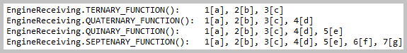
Console log from 'Arity::methodWithFiveFunctionParameters' method.
Method kp.methods.arity.Arity::methodWithConsumerParameter
Console log from 'Arity::methodWithConsumerParameter' method.
Method kp.methods.arity.Arity::methodWithFunctionParameter
Console log from 'Arity::methodWithFunctionParameter' method.
5.2. Class
kp.methods.calling.Contrasting
Method kp.methods.calling.Contrasting::usingLocalClassVersusAnonymousClassVersusLambdaExpression

Console log from 'Contrasting::usingLocalClassVersusAnonymousClassVersusLambdaExpression' method.
Method kp.methods.calling.Contrasting::lambdaAccessingVersusCallingDirectly
Console log from 'Contrasting::lambdaAccessingVersusCallingDirectly' method.
5.3. Interface
kp.methods.composing.FunctionComposer
Method kp.methods.composing.FunctionComposer::composeFunctions
Console log from 'FunctionComposer::composeFunctions' method.
5.4. Interface
kp.methods.functional.FunctionalInterfaceWrapper
Method kp.methods.functional.FunctionalInterfaceWrapper::launchFunctionalInterface
Console log from 'FunctionalInterfaceWrapper::launchFunctionalInterface' method.
5.5. Class
kp.methods.invoking.FindHandleAndInvoke
Method kp.methods.invoking.FindHandleAndInvoke::invokeObjectMethods
Console log from 'FindHandleAndInvoke::invokeObjectMethods' method.
Method kp.methods.invoking.FindHandleAndInvoke::invokeFirstSetterThenGetter

Console log from 'FindHandleAndInvoke::invokeFirstSetterThenGetter' method.
Method kp.methods.invoking.FindHandleAndInvoke::replaceArrayElement

Console log from 'FindHandleAndInvoke::replaceArrayElement' method.
5.6. Interface
kp.methods.proxy.ProxyAndInvoke
Method kp.methods.proxy.ProxyAndInvoke::invokeMethod
Console log from 'ProxyAndInvoke::invokeMethod' method.
Action:
Launch batch file
'01 Build And Run Menu.bat'
and select the menu item 'Processes'.
It starts the application kp.processes.ApplicationForProcesses.
6.1. Class
kp.processes.Reporter
Method kp.processes.Reporter::showElapsed
Console log from 'Reporter::showElapsed' method.
Method kp.processes.Reporter::listSystemProperties
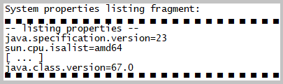
Console log from 'Reporter::listSystemProperties' method.
Method kp.processes.Reporter::showEnvironment
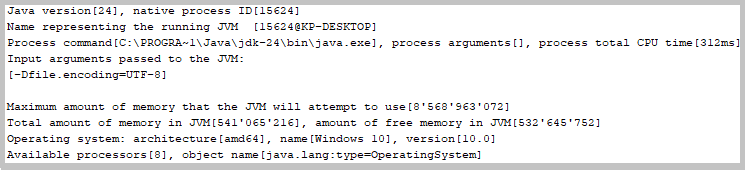
Console log from 'Reporter::showEnvironment' method.
Method kp.processes.Reporter::showClassloaders
Console log from 'Reporter::showClassloaders' method.
Method kp.processes.Reporter::showDirectories
Console log from 'Reporter::showDirectories' method.
Method kp.processes.Reporter::showFileStores
Console log from 'Reporter::showFileStores' method.
6.2. Class
kp.processes.ApplicationForProcesses
Method kp.processes.ApplicationForProcesses::startProcess
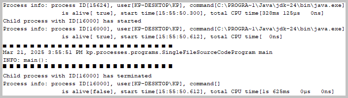
Console log from 'ApplicationForProcesses::startProcess' method.
Action:
Launch batch file
'01 Build And Run Menu.bat'
and select the menu item 'Reactive Streams'.
It starts the application kp.reactive.streams.ApplicationForReactiveStreams.
7.1. Class
kp.reactive.streams.FlowLauncher
Method kp.reactive.streams.FlowLauncher::launchSubmissionPublisherAndSubscriber
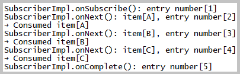
Console log from 'FlowLauncher::launchSubmissionPublisherAndSubscriber' method.
Method kp.reactive.streams.FlowLauncher::launchPeriodicPublisherAndSubscriber
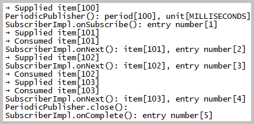
Console log from 'FlowLauncher::launchPeriodicPublisherAndSubscriber' method.
Method kp.reactive.streams.FlowLauncher::launchSubmissionPublisherAndProcessor
Console log from 'FlowLauncher::launchSubmissionPublisherAndProcessor' method.
Method kp.reactive.streams.FlowLauncher::launchPublisherImplAndSubscriber
Console log from 'FlowLauncher::launchPublisherImplAndSubscriber' method.
7.2. Class
kp.reactive.streams.WebFlowLauncher
Method kp.reactive.streams.WebFlowLauncher::receiveResponseUsingLineSubscriber
Console log from 'WebFlowLauncher::receiveResponseUsingLineSubscriber' method.
Method kp.reactive.streams.WebFlowLauncher::receiveResponseUsingSubscriberForByteBufferList
Console log from 'WebFlowLauncher::receiveResponseUsingSubscriberForByteBufferList' method.
Method kp.reactive.streams.WebFlowLauncher::receiveResponseUsingPublisher
Console log from 'WebFlowLauncher::receiveResponseUsingPublisher' method.
Action:
Launch batch file
'01 Build And Run Menu.bat'
and select the menu item 'Records'.
It starts the application kp.records.ApplicationForRecords.
8.1. Class
kp.records.ApplicationForRecords
Method kp.records.ApplicationForRecords::processUnicodeScripts
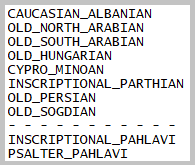
Console log from 'ApplicationForRecords::processUnicodeScripts' method.
Method kp.records.ApplicationForRecords::processThings
Console log from 'ApplicationForRecords::processThings' method.
Method kp.records.ApplicationForRecords::processArticles
Console log from 'ApplicationForRecords::processArticles' method.
Method kp.records.ApplicationForRecords::processCongruence
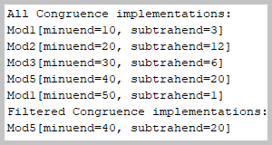
Console log from 'ApplicationForRecords::processCongruence' method.
Method kp.records.ApplicationForRecords::compareConstructing
Console log from 'ApplicationForRecords::compareConstructing' method.
Method kp.records.ApplicationForRecords::processMultiplets
Console log from 'ApplicationForRecords::processMultiplets' method.
Method kp.records.ApplicationForRecords::processAlphabet
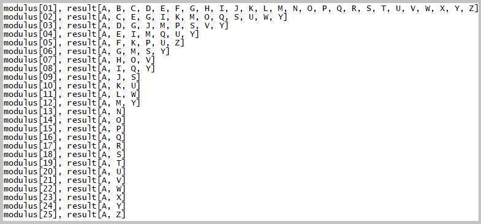
Console log from 'ApplicationForRecords::processAlphabet' method.
Method kp.records.ApplicationForRecords::processMoney
Console log from 'ApplicationForRecords::processMoney' method.
Method kp.records.ApplicationForRecords::processBorders
Console log from 'ApplicationForRecords::processBorders' method.
Method kp.records.ApplicationForRecords::processTasks
Console log from 'ApplicationForRecords::processTasks' method.
Method kp.records.RecordPatterns::processRecordPatterns
Console log from 'RecordPatterns::processRecordPatterns' method.
Action:
Launch batch file
'01 Build And Run Menu.bat'
and select the menu item 'Regex'.
It starts the application kp.regex.ApplicationForRegex.
9.1. Class
kp.regex.ApplicationForRegex.
Method kp.regex.ApplicationForRegex::showGreedyReluctantPossessiveQuantifiers
Console log from 'ApplicationForRegex::showGreedyReluctantPossessiveQuantifiers' method.
Method kp.regex.ApplicationForRegex::showNamedCapturingGroups
Console log from 'ApplicationForRegex::showNamedCapturingGroups' method.
9.2. Class
kp.regex.StreamFiltering.
Method kp.regex.StreamFiltering::filterWithMatchedRegexPredicateOne
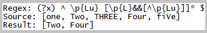
Console log from 'StreamFiltering::filterWithMatchedRegexPredicateOne' method.
Method kp.regex.StreamFiltering::filterWithMatchedRegexPredicateTwo
Console log from 'StreamFiltering::filterWithMatchedRegexPredicateTwo' method.
Method kp.regex.StreamFiltering::filterWithPatternPredicates
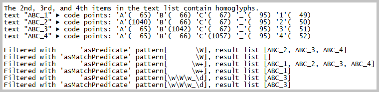
Console log from 'StreamFiltering::filterWithPatternPredicates' method.
9.3. Class
kp.regex.ReplacingWithMatcher.
Method kp.regex.ReplacingWithMatcher::replaceAllInSingleLine
Console log from 'ReplacingWithMatcher::replaceAllInSingleLine' method.
Method kp.regex.ReplacingWithMatcher::replaceAllInMultiline
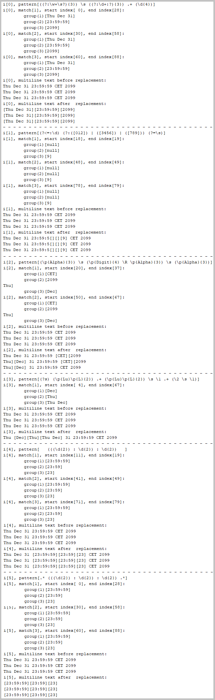
Console log from 'ReplacingWithMatcher::replaceAllInMultiline' method.
Method kp.regex.ReplacingWithMatcher::appendReplacement
Console log from 'ReplacingWithMatcher::appendReplacement' method.
9.4. Class
kp.regex.Tokenization.
Method kp.regex.Tokenization::tokenizeWithPattern
Console log from 'Tokenization::tokenizeWithPattern' method.
Method kp.regex.Tokenization::tokenizeWithScanner
Console log from 'Tokenization::tokenizeWithScanner' method.
Method kp.regex.Tokenization::tokenizeWithScannerTextFromUrl
Console log from 'Tokenization::tokenizeWithScannerTextFromUrl' method.
Action:
Launch batch file
'01 Build And Run Menu.bat'
and select the menu item 'Sorting'.
It starts the application kp.sorting.ApplicationForSorting.
10.1. Class
kp.sorting.ApplicationForSorting.
Method kp.sorting.ApplicationForSorting::sortStringArray
Console log from 'ApplicationForSorting::sortStringArray' method.
Method kp.sorting.ApplicationForSorting::sortIntegerArray
Console log from 'ApplicationForSorting::sortIntegerArray' method.
Method kp.sorting.ApplicationForSorting::sortStreamWithNaturalOrder
Console log from 'ApplicationForSorting::sortStreamWithNaturalOrder' method.
Method kp.sorting.ApplicationForSorting::sortStreamWithLocale
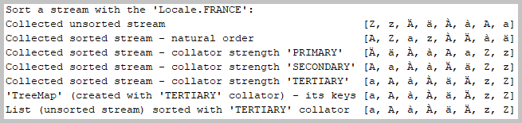
Console log from 'ApplicationForSorting::sortStreamWithLocale' method.
Method kp.sorting.ApplicationForSorting::sortMapByKeyOrByValue
Console log from 'ApplicationForSorting::sortMapByKeyOrByValue' method.
Method kp.sorting.ApplicationForSorting::sortWithComparableAndComparator
Console log from 'ApplicationForSorting::sortWithComparableAndComparator' method.
Action:
Launch batch file
'01 Build And Run Menu.bat'
and select the menu item 'Streams Collecting'.
It starts the application kp.streams.collecting.ApplicationForStreamsCollecting.
11.1. Class
kp.streams.collecting.ApplicationForStreamsCollecting.
Method kp.streams.collecting.ApplicationForStreamsCollecting::useStringJoiners

Console log from 'ApplicationForStreamsCollecting::useStringJoiners' method.
Method kp.streams.collecting.ApplicationForStreamsCollecting::collectStream
Console log from 'ApplicationForStreamsCollecting::collectStream' method.
Method kp.streams.collecting.ApplicationForStreamsCollecting::countWithoutPipelineExecution
Console log from 'ApplicationForStreamsCollecting::countWithoutPipelineExecution' method.
Method kp.streams.collecting.ApplicationForStreamsCollecting::groupByDifferenceFromExpected
Console log from 'ApplicationForStreamsCollecting::groupByDifferenceFromExpected' method.
11.2. Class
kp.streams.collecting.Iterating.
Method kp.streams.collecting.Iterating::process
Console log from 'Iterating::process' method.
11.3. Class
kp.streams.collecting.NullsAndOptionals.
Method kp.streams.collecting.NullsAndOptionals::concatenateWithStreamFromNullable
Console log from 'NullsAndOptionals::concatenateWithStreamFromNullable' method.
Method kp.streams.collecting.NullsAndOptionals::nullsInStreamWithoutOptionals
Console log from 'NullsAndOptionals::nullsInStreamWithoutOptionals' method.
Method kp.streams.collecting.NullsAndOptionals::nullsInStreamWithOptionals
Console log from 'NullsAndOptionals::nullsInStreamWithOptionals' method.
11.4. Class
kp.streams.collecting.Traversing.
Method kp.streams.collecting.Traversing::traverseListWithIterator
Console log from 'Traversing::traverseListWithIterator' method.
Method kp.streams.collecting.Traversing::traverseQueue
Console log from 'Traversing::traverseQueue' method.
Method kp.streams.collecting.Traversing::traverseDeque
Console log from 'Traversing::traverseDeque' method.
11.5. Class
kp.streams.collecting.Flattening.
Method kp.streams.collecting.Flattening::transformsMultidimensionalToFlatForBytes
Console log from 'Flattening::transformsMultidimensionalToFlatForBytes' method.
Method kp.streams.collecting.Flattening::transformMultidimensionalToFlatForStrings
Console log from 'Flattening::transformMultidimensionalToFlatForStrings' method.
Method kp.streams.collecting.Flattening::compareMapMultiVersusFlatMapForNumbers
Console log from 'Flattening::compareMapMultiVersusFlatMapForNumbers' method.
Method kp.streams.collecting.Flattening::compareMapMultiVersusFlatMapForStrings
Console log from 'Flattening::compareMapMultiVersusFlatMapForStrings' method.
Action:
Launch batch file
'01 Build And Run Menu.bat'
and select the menu item 'Streams Fragmentation'.
It starts the application kp.streams.fragmentation.ApplicationForStreamsFragmentation.
12.1. Class
kp.streams.fragmentation.ApplicationForStreamsFragmentation.
Method kp.streams.fragmentation.ApplicationForStreamsFragmentation::skipAndLimit
Console log from 'ApplicationForStreamsFragmentation::skipAndLimit' method.
Method kp.streams.fragmentation.ApplicationForStreamsFragmentation::dropAndTake
Console log from 'ApplicationForStreamsFragmentation::dropAndTake' method.
Method kp.streams.fragmentation.ApplicationForStreamsFragmentation::filter
Console log from 'ApplicationForStreamsFragmentation::filter' method.
Method kp.streams.fragmentation.ApplicationForStreamsFragmentation::match
Console log from 'ApplicationForStreamsFragmentation::match' method.
Action:
Launch batch file
'01 Build And Run Menu.bat'
and select the menu item 'Streams Gathering'.
It starts the application kp.streams.gathering.ApplicationForGathering.
13.1. Class
kp.streams.gathering.ApplicationForGathering.
Method kp.streams.gathering.ApplicationForGathering::processWithGatherersFold
Console log from 'ApplicationForGathering::processWithGatherersFold' method.
Method kp.streams.gathering.ApplicationForGathering::processWithGatherersScan
Console log from 'ApplicationForGathering::processWithGatherersScan' method.
Method kp.streams.gathering.ApplicationForGathering::processWithGatherersWindowFixed
Console log from 'ApplicationForGathering::processWithGatherersWindowFixed' method.
Method kp.streams.gathering.ApplicationForGathering::processWithGatherersWindowSliding
Console log from 'ApplicationForGathering::processWithGatherersWindowSliding' method.
Action:
Launch batch file
'01 Build And Run Menu.bat'
and select the menu item 'Streams Teeing'.
It starts the application kp.streams.teeing.ApplicationForCollectorsTeeing.
14.1. Class
kp.streams.teeing.ApplicationForCollectorsTeeing.
Method kp.streams.teeing.ApplicationForCollectorsTeeing::processJoining
Console log from 'ApplicationForCollectorsTeeing::processJoining' method.
Method kp.streams.teeing.ApplicationForCollectorsTeeing::processZonedDateTime
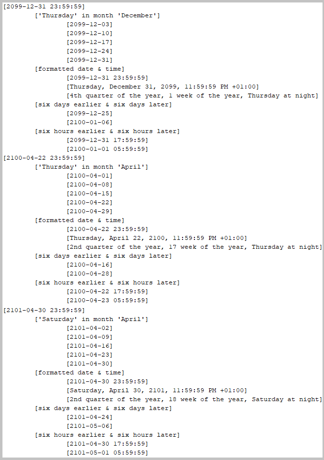
Console log from 'ApplicationForCollectorsTeeing::processZonedDateTime' method.
Method kp.streams.teeing.ApplicationForCollectorsTeeing::processAtomicSimple
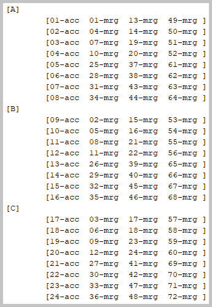
Console log from 'ApplicationForCollectorsTeeing::processAtomicSimple' method.
Method kp.streams.teeing.ApplicationForCollectorsTeeing::processAtomicDetailed
Console log from 'ApplicationForCollectorsTeeing::processAtomicDetailed' method.
Action:
Launch batch file
'01 Build And Run Menu.bat'
and select the menu item 'Synchronizers'.
It starts the application kp.synchronizers.ApplicationForSynchronizers.
15.1. Class
kp.synchronizers.CyclicBarrierLauncher.
Method kp.synchronizers.CyclicBarrierLauncher::launchCyclicBarrierThreeTimes
Console log from 'CyclicBarrierLauncher::launchCyclicBarrierThreeTimes' method.
15.2. Class
kp.synchronizers.PhaserLauncher.
Method kp.synchronizers.PhaserLauncher::usePhaserToOpenGateForTasks
Console log from 'PhaserLauncher::usePhaserToOpenGateForTasks' method.
Method kp.synchronizers.PhaserLauncher::usePhaserToAwaitOtherTasks
Console log from 'PhaserLauncher::usePhaserToAwaitOtherTasks' method.
15.3. Class
kp.synchronizers.pausing.PausedByVolatile.
Method kp.synchronizers.pausing.PausedByVolatile::process
Console log from 'PausedByVolatile::process' method.
15.4. Class
kp.synchronizers.locks.ConditionBoundLock.
Method kp.synchronizers.locks.ConditionBoundLock::process
Console log from 'ConditionBoundLock::process' method.
15.5. Class
kp.synchronizers.locks.SharedResourceWithReentrantLock.
Method kp.synchronizers.locks.SharedResourceWithReentrantLock::process
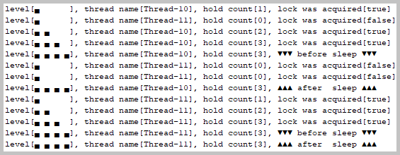
Console log from 'SharedResourceWithReentrantLock::process' method.
Action:
Launch batch file
'01 Build And Run Menu.bat'
and select the menu item 'Tasks'.
It starts the application kp.tasks.ApplicationForTasks.
16.1. Class
kp.tasks.ApplicationForTasks.
Method kp.tasks.ApplicationForTasks::compareExecutors
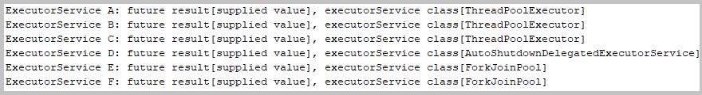
Console log from 'ApplicationForTasks::compareExecutors' method.
Method kp.tasks.ApplicationForTasks::completeCompletableFutures
Console log from 'ApplicationForTasks::completeCompletableFutures' method.
Method kp.tasks.ApplicationForTasks::executeFutureTasks
Console log from 'ApplicationForTasks::executeFutureTasks' method.
Method kp.tasks.ApplicationForTasks::executeRunnablesAndCallables
Console log from 'ApplicationForTasks::executeRunnablesAndCallables' method.
Method kp.tasks.ApplicationForTasks::invokeCallableTasksCollection
Console log from 'ApplicationForTasks::invokeCallableTasksCollection' method.
16.2. Class
kp.tasks.SafeFutureCompletion.
Method kp.tasks.SafeFutureCompletion::process
Console log from 'SafeFutureCompletion::process' method.
16.3. Class
kp.tasks.StageCompletion.
Method kp.tasks.StageCompletion::completeSingleStageWithDependencies
Console log from 'StageCompletion::completeSingleStageWithDependencies' method.
Method kp.tasks.StageCompletion::completeEitherOfTwoStages
Console log from 'StageCompletion::completeEitherOfTwoStages' method.
Method kp.tasks.StageCompletion::completeBothOfTwoStages
Console log from 'StageCompletion::completeBothOfTwoStages' method.
16.4. Class
kp.tasks.virtual.VirtualThreadsAndPlatformThreads.
Method kp.tasks.virtual.VirtualThreadsAndPlatformThreads::startPlatformThreadsAndVirtualThreads
Console log from 'VirtualThreadsAndPlatformThreads::startPlatformThreadsAndVirtualThreads' method.
Method kp.tasks.virtual.VirtualThreadsAndPlatformThreads::executeTasksWithExecutorService
Console log from 'VirtualThreadsAndPlatformThreads::executeTasksWithExecutorService' method.
Action:
Launch batch file
'01 Build And Run Menu.bat'
and select the menu item 'Web Client'.
It starts the application kp.web.httpclient.ApplicationForWebClient.
17.1. Class
kp.web.httpclient.ApplicationForWebClient.
Method kp.web.httpclient.ApplicationForWebClient::sentRequestSynchronously
Console log from 'ApplicationForWebClient.sentRequestSynchronously(EXAMPLE_URI_STATUS_CODE_200)' method.
Console log from 'ApplicationForWebClient.sentRequestSynchronously(EXAMPLE_URI_STATUS_CODE_404)' method.
Method kp.web.httpclient.ApplicationForWebClient::sentRequestAsynchronously
Console log from 'ApplicationForWebClient.sentRequestAsynchronously(EXAMPLE_URI_STATUS_CODE_200)' method.
Console log from 'ApplicationForWebClient.sentRequestAsynchronously(EXAMPLE_URI_STATUS_CODE_404)' method.
Action:
Launch batch file
'01 Build And Run Menu.bat'
and select the menu item 'Web Server'.
It starts the web server application kp.web.httpserver.ApplicationForWebServer.
18.1. Class
kp.web.httpserver.WebServerLauncher.
Method
kp.web.httpserver.WebServerLauncher::startServer
Method
kp.web.httpserver.WebServerLauncher::stopServer
Web server home page on localhost.
The screenshots of the web pages from the links on the web server home page:
Back to the top of the pageAction:
Launch batch file
'01 Build And Run Menu.bat'
and select the menu item 'Web Sockets'.
It starts the application kp.web.sockets.ApplicationForSockets.
19.1. Class
kp.web.sockets.ApplicationForSockets.
Abstract class kp.web.sockets.wrapper.SocketWrapper implementations:
Method kp.web.sockets.ApplicationForSockets::processLoop
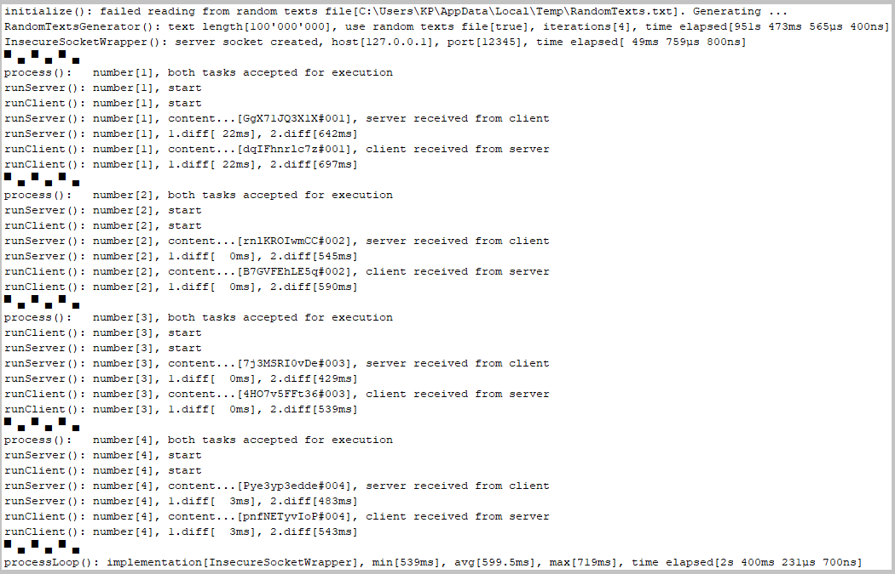
Console log from 'ApplicationForSockets.processLoop(new InsecureSocketWrapper())' method.
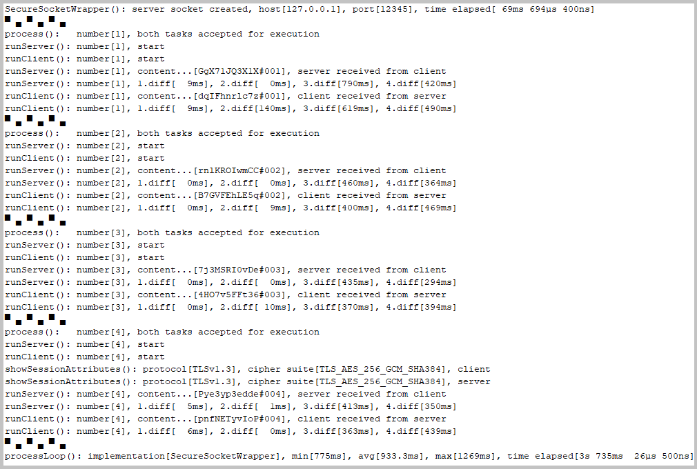
Console log from 'ApplicationForSockets.processLoop(new SecureSocketWrapper())' method.
Action:
Launch batch file
'02 Tools Batch Menu.bat'
and select from these menu items:
 [A] javap -
'ClassForClassFileDisassembler'
[A] javap -
'ClassForClassFileDisassembler'
 [B] javap -
'ClassForClassFileDisassembler' verbose
[B] javap -
'ClassForClassFileDisassembler' verbose
 [C] Unified JVM Logging GC
[C] Unified JVM Logging GC
 [D] Unified JVM Logging all
[D] Unified JVM Logging all
 [E] keytool - list keystore 'testkeys'
[E] keytool - list keystore 'testkeys'
 [F] keytool - list truststore 'samplecacerts'
[F] keytool - list truststore 'samplecacerts'
The console log screenshot for the selected menu item «javap - 'ClassForClassFileDisassembler' »
The console log screenshot for the selected menu item «javap - 'ClassForClassFileDisassembler' verbose»
The console log screenshot for the selected menu item «Unified JVM Logging GC»
For other menu items, the console log screenshots are not provided in this 'README' documentation.
Back to the top of the page

{kind=link}
{kind=link}
{kind=link}
{kind=link}
{kind=link}
{kind=link}